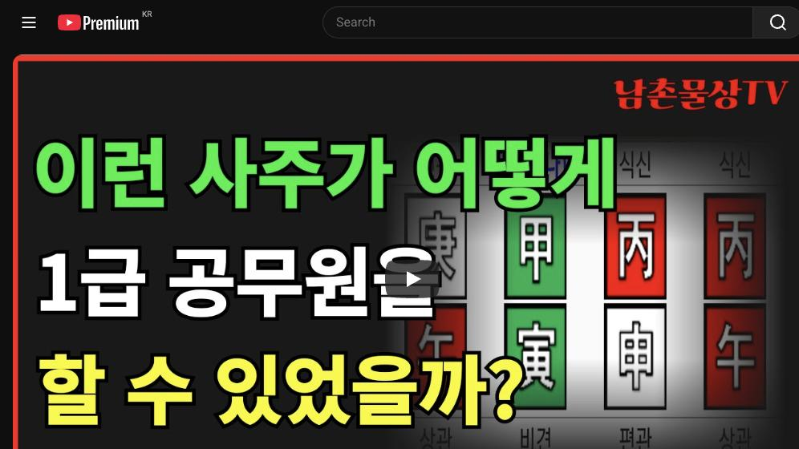

남촌물상TV 전체 문서 › 동영상 V0103
이런 사주가 어떻게 1급 공무원을 할 수 있었을까?

| 문서 번호 | V0103 (동영상) |
|---|---|
| 영상 URL | https://www.youtube.com/watch?v=Bs95dUEzuFY |
| 영상 ID | Bs95dUEzuFY |
| 게시일 | 2024-11-25 |
| 길이 | 25:00 (1500초) |
| 조회수 | 1,720회 (수집 시점 기준) |
| 카테고리 | Howto & Style |
| 자막 | ko (자동생성) |
| 수집 시각 | 2026-08-30 19:08 (KST) |
영상 설명 (YouTube 설명 원문 그대로)
이런 사주가 어떻게 1급 공무원을 할 수 있었을까? #사주팔자 #사주풀이 #공무원사주
전체 자막 (567구간 · 타임스탬프 클릭 시 해당 장면으로 이동)
[0:00]자 제거해서 내가 꽃혀 줄 때가 좋아
[0:03]안 좋아 좋지 부부이 합의될 때가인
[0:05]합 돼 안돼 그의 합격 가고
[0:06]결혼한거다이
[0:09]말이지 지금 이제 밴드에 올린 사주를
[0:12]한번 풀어볼
[0:13]건데요 병호 갑인 경호 이렇게
[0:18]보시면 사주들이 눈에 들어온 거
[0:20]있으세요 별로 썩 들어오진 않죠 근데
[0:23]특징이이 병에 대한 특징은 여러분들이
[0:27]가장 쉽게 알 수 있는 방법이
[0:30]두 개 있을 때 세개가 되거나 하나를
[0:33]제거하거나 이럴 때가 제이 능력
[0:35]잘된다이 전제적 아시고 하시면 돼요
[0:39]자 그러 여기에 이제 사주 특성이 제
[0:42]없는게 우리 항시 먼저 찾으라고 잖
[0:44]없는게 뭐가 없어요 자 물이 없다 자
[0:46]물이 없어요 자 물이 없다는
[0:49]얘기는 갑의 갑목이 성할 수가 없다
[0:53]이게 전제조건 아니겠어요 물이 성할
[0:55]거 아닙니까 그럼 우리가 이제이
[0:57]물이라는 자체를 어디서 끌어서
[1:00]만드느냐가 중요한 거지 그럼 내가 살
[1:02]수 있는 기관이에요 그렇죠 그러면 어
[1:06]천간에서 보면이 물을 꾸온 자는 어디
[1:09]있어요 없죠 자 그럼
[1:12]여기에서 병화 신금이 했을 때
[1:16]합수 되는 거죠 그렇죠 그럼 물이
[1:18]생기는 거예요 자 그리고 그럼 이런
[1:21]사람들 우리가 그 그 사주 황실 이런
[1:24]보실 때 팔자는 바뀔 수 있다라고
[1:26]제가 한 얘기를 여기서 실감하게
[1:28]됩니다 아 그래서 이런 걸 왜 보냐
[1:32]그러면이 사람이 물이 없는데 어떻게
[1:34]일곱 뭐 성자 공부를 잘 했겠어요
[1:36]되지 않는다 그래서 제가 상시 얘기할
[1:38]때 팔자가 봐주던 인생일 때 누구를
[1:41]만나냐고 두 번째 어떤 환경에
[1:44]살았느냐에 따라서 운명이 바뀔 수
[1:46]있던 거예요 아무리 똑똑해도 시골에서
[1:49]농사지 앉았으면 농사꾼의 아들인데
[1:52]환경을 바꿨을 때 본인이 턴이진다
[1:55]하는 얘기를 여기 실감할 수 있는
[1:57]겁니다 자 그러면
[1:59]이분은 했을 때 어디가
[2:02]살았을까요요 자 그 자 물이 없을때
[2:05]쳐주고 애국가 살거나 그 공부를
[2:07]하거나 그다음에 지명으로 따 때는
[2:10]수원이
[2:11]물이죠 수원 인천 그다음에 평택의
[2:15]한국 도시 이런 쪽을 대부분 이제
[2:18]물로 친다 그 말이에요 그러면 이분은
[2:20]어디서 할까 결국 한국를 낀 평택에
[2:23]출생했고 주로 공직생활을 수원에서
[2:26]하셨습니다 그러니까 지명의 소위 지역
[2:30]안배를 본인이 없는 물을 취할 수
[2:33]있는 조건을 가지고 있었기 때문에이
[2:34]사람 승리한 거예요 그럼 사주
[2:36]구성으로 봤을 때 고조으로 봤을 때이
[2:38]사주가 그 잘된
[2:40]사주에 아닙니다 절대 아니에요 근데이
[2:43]사람이 왜 1급에 최 거의 1급까지
[2:45]공부할 수 있었냐이 말이에요 자 그
[2:48]이게 이제 특징이 있는데에 이걸
[2:51]고조를 해석하면 고속이 안 돼요이
[2:53]사람을 누구가 일곱 공원이라 할 수
[2:55]있어요 못한다고요 자
[2:58]그러면 항시 여러분들이 생각 할 때
[3:00]재 관을 벌라고 있잖아요 자 감목
[3:04]일간에 재가 있어요 없어요 없어요
[3:07]없잖아요 아까 없는 얘기만 그 저
[3:10]수만 없다고 토 없는 얘기는 안
[3:11]하더라고 자 그러면 여기에 토가 없단
[3:14]말이에요 그럼이 사람이 무죄 사주죠
[3:17]자 무죄
[3:18]사주야지 사 수 있는 조건이 하나도
[3:20]없어요 그럼 물도 없지 땅도 없는데
[3:22]뭘로 살 거냐 그
[3:23]말이에요 이게 검증한게 소위 우리가
[3:27]얘기한 지역이 어떤 지역에 살았고
[3:30]어떤 환경이 살았냐이 사람 문명을
[3:33]자할 수 있는 거예요 북한의 종중과
[3:36]회장이 예를 들어서 북한에서 살아서
[3:38]무슨 재벌이 돼 안 됩니다 어떤
[3:40]환경이 살았냐 역관을 가장 중요한
[3:43]거예요 그래서 이번에 같은
[3:44]경우는 사주 구성으로면 전혀 안 되는
[3:49]사주예담 왜 어떻게 돼 있는가 이런
[3:52]거 보시면은 우리가 제가 한 얘기를
[3:55]실감할 수 있고 그럼 자 이런 분들이
[3:57]해에 갔을 때 안 갔을 때 차이점도
[3:59]있을 거라 그말 입니다 국내에서 살
[4:02]때는 반드시 물이 끼는 나라 평할 낀
[4:05]그 동네에 살아야만이 이분이 살아
[4:08]나가는데 지장없이 사는 거지만 만약에
[4:11]애국을 간다 생각 봅시다 잘 볼까요
[4:14]자 이런 사람은 외국을 가서 제대로
[4:16]공부를 했으면 부 용인이 될 수 있는
[4:18]사주에 알고 보면 자 부 용인이 된다
[4:21]그 말이에요 자 부 용인이 된다는
[4:24]얘기는 잘
[4:25]보세요 외국을 가게 되면 새로운
[4:27]태양이 뜬다 그랬죠 그럼 애국 병하나
[4:30]하나 더 떠요 자 평가
[4:32]떴으면 3대 합을 해서 하나가 되는
[4:36]거죠 3대 1 합을 하나예요 그러면
[4:38]이제 태양이 세 개 앞에 하나가 된다
[4:40]3대 1 합분 된다고 제가 강의할
[4:42]당시 했었죠 우리는 물상 배울 때
[4:45]하나가 뜨면 꽃을 피게 되는 거예요
[4:48]그죠 하나가 뜨니까 꽃을 두 개
[4:51]태양이 있다 두 개의 태양이나 그래서
[4:53]태양은 미한 존재 하나가 돼야 되는데
[4:57]이게 제에 문제는 어떤 거 있냐 둘이
[5:00]떠 있다는 태양이 어둡다 우리 그렇게
[5:02]표현 했잖아요 자 그러면 태양이 세
[5:05]개가 하나가 됐을 때 유일만 존재라서
[5:09]성장하고 제조되는거다 그럼 자 어느
[5:12]나라를 가야 될 것이냐 그 말이야
[5:13]어느 나라를 자이 사람은 지금 관이
[5:15]관이 여기
[5:18]여기죠네
[5:20]잘못하면이 관도 호수로 타보는 거예요
[5:23]그게 사주 구성은 아주 빵점이지만
[5:30]임수 뿌리는 뭐예요
[5:32]해수 신사야 되잖아요 그래서이 경우는
[5:37]소위 외국에 가서 할수 굉장히 좋은
[5:40]사주 된다고 볼 수 있는 거예요
[5:42]그러면이 사람이 자 나라를 선택할 때
[5:46]우리가 영국이나 호주나 이런 쪽으로
[5:49]설날를 선택할 것이냐 일본을 선택할
[5:51]것이냐 토가 없어 갑목이 사는 나라는
[5:54]무토 말이에요 그래서 대륙을 킨
[5:56]나라로 유혹을 가면 된다 이게 딱
[5:58]정해진 거예요 그럼 자 대륙을 낀
[6:01]날라갈 때는 모토가 들어가죠
[6:03]그렇죠이 3대 여권을 딱 갖춰주면이
[6:06]사람은 성공할 수 있는 크게 성공할수
[6:08]있는 거야 안전히 조건이 다 구비가
[6:11]되잖아요 자 본인이 없는 물을 숙채
[6:14]나무가 성장할 수 있어 없는 땅이
[6:16]와서 나무가 심어져 그다음에 태양이
[6:19]하나 가서 꼽혀 주니까 세상 자기
[6:21]능력을 다 발휘할 수 있는 역이 된다
[6:23]그 말이에요 이런 사주 특성이 지금
[6:27]우리가 봤을 때 물상론 아니면 해석이
[6:29]할 수가 없는 사주에 그래서 제가 그
[6:31]얘기 처음에 옛날 그랬어요 대학원도
[6:33]자 팔자가 벗겨 무슨 팔자가 바뀌냐
[6:36]지금도 그렇게 부정한 사람 있어요
[6:38]지금은 거의 70% 인정을 해 주고
[6:40]있어요 제 말을 인정합니다 아 그럴
[6:43]때 저 같은 경우도 한경에 따라서
[6:46]어떤 항에 살았냐고 제일 중요하 맨날
[6:48]얘기하는데 자 박사한테 시집을 가야될
[6:50]사주인데 시골서 처 시골서 농사원
[6:53]취과 무슨 박사가 언제 와서 자기를
[6:55]찾겠어요 그 박사 박사가 시골 거
[6:57]찾아서 박사 찾아 오겠어요
[7:00]박사가 사는 동네 소위 서울대학교
[7:02]앞에서 뭐 일을 한다든가 서울대학교
[7:05]앞에서 살면은 오다가다 인물이 잘
[7:07]났으니까 호 하니까 서울대학 학생들이
[7:11]만나서 연인 할 수 있고 박사가 되는
[7:13]거예요 근데 시골 농사 주까지는
[7:14]박사가 되냐 안 된다 어디서 박사
[7:16]같은 신랑을 얻어 못 얻지 똑같은
[7:19]얘기다 그 말이에요 이게 우리 물상
[7:21]노의 가장 현실적이고 제가 수만 명을
[7:24]검증한 검증이
[7:26]될거예요 자 그러면이 사람
[7:29]입장으로서는 이제 새로운 땅과 새로운
[7:32]물과 태양이 하나가 됐으니 모든 역을
[7:35]다 구별하게 되죠 그러면 이런 사람
[7:37]경우는 자 만약에이 사람이 해를 갔다
[7:40]얘기는 해수가 하나 붙는다고 보시면
[7:42]돼 그렇죠 여기 해수가 하나 붙는다
[7:44]그 말이에요 자 자 해수가 붙을 때우
[7:47]뭐라 그랬어요 인신 사이죠 이게
[7:49]마케팅 전략이라는 거예요 그럼이 사람
[7:53]경우는 애에서 공부해서 마케팅
[7:54]전략으로 굉장히 크게 돈을 벌 수가
[7:56]있다는 얘기가 나오는 것이고 그다음에
[8:00]경화 태양이 세계가 됐기 때문에
[8:03]만약에이 사람이 예무 고시로 만약에
[8:07]예무 그 교시 시험을 갔다면 대사로서
[8:09]여러 나라를 거릴 수 있는 사람이 되
[8:11]것이고 만약에이 사람이 사업가를
[8:15]진출했다면 무역업으로 여러 나라를
[8:18]무역할 수 있는 사주가 된다 그
[8:20]말이에요 이게이 사람 핵심이고
[8:22]근본적인 사주 근본 원인이에요
[8:23]그러니까 우리는 사주 근본이 안
[8:26]좋으니까 너 그냥 안 좋으니까 살아가
[8:28]아니라 어떻게 하면 네가 잘 살 수
[8:31]있다 하는 걸 전제 조건으로 만들어
[8:34]주는 입장이 우리가 할 일이다이
[8:35]말이에요 자 완전 이렇게 팔짝 바뀌는
[8:37]겁니다 안제 벗겨요 자 이것을 가지고
[8:40]우리는 근본적인 사주 구성에 따라서
[8:42]애국을 가면 좋다 어느나라를 갈게
[8:44]대륙 갈기 있 나라 대륙기 미국이나
[8:47]또대 대륙기 나라가 어디요 프랑스
[8:50]독일 어 뭐 큰 나라 대륙기 나라
[8:53]한게이 사람한테 성과 기질이 된다이
[8:55]거야 그러면 만약에이 사람이 예를
[8:58]들어서 유럽쪽으로 한번 적 유럽 다
[9:00]좋습니다 유럽은 유럽은 뭐라 그랬어
[9:02]우리가 오행을 내가 만들 때 신유라
[9:04]그랬어요 자 그러면 신유라 그
[9:07]말이야 자 신유가 되면은 저기
[9:11]하나 제거하겠습니다 태양이 하나만
[9:13]뜨죠 그죠 자 그럼 사가 온다는
[9:16]얘기는 사유 축의 인이 될 수 있는
[9:19]거예요 그 유록 하도 되는 거예요
[9:21]유록 하면 어쩐 쪽이 사유의 인신
[9:25]사이니까 유금을 쓰는 직업을 가지면
[9:27]되는
[9:28]거고 미국을 가게 되면 금을 쓴
[9:30]직업이었기 때문에 결과 20세
[9:32]개념으로서 마케팅 전략으로 갈 수
[9:34]있는 거 관을 쓴 직업으로 가라
[9:35]이렇게 딱 명백하게 답이 딱 나오는
[9:38]거 아니에요 그래 제가 여기 그
[9:40]놓치지만 재벌들이 저 상담할 때 그런
[9:42]거 합니다 당신은 유학을 어디로 가서
[9:45]했지 딱딱 집어내는 그 사람들이 다
[9:48]재벌들이 탐하는 거예요 그래서 그
[9:50]사람들이 저한테 오는 것이지 뭐
[9:52]뭐라고 저한테 돈주고 오는 거고
[9:54]있어요 다 그래서 오는 거지 저는
[9:56]제가 항식 얘기지만 우리들이 기본적인
[9:59]사주의 이 같은 업종을 하더라도
[10:02]차별화가 되는 일을 해야 된다 다른
[10:04]사람 5만 원 받으 물리 10만 원
[10:06]이상 가치성을 가지고 해 줘야 되지
[10:08]똑같이 할 바 뭐 여기 공부할 필요
[10:10]없어요 저는 왜 20만 원 도고
[10:12]50만 100만 원 하 이유가
[10:14]뭐겠어요 차별화가 되기 때문에 그렇다
[10:16]거 제가 교수로 잘한 거 그거 아니야
[10:19]현실과 이상이 세기에서 차별화되는
[10:23]관법을 적용하기 때문에 그 사람들이
[10:24]적중하기 때문에 그 사람들이 저한테
[10:25]오는 것이지 그렇지 하면 저한테
[10:27]오기어는 이유가 뭐 돈 많이 주고 왜
[10:29]오고 있어요 중국에서는 왜 오고
[10:31]미국에서는 왜 상담을 하고 하겠냐고
[10:32]다 이유가 있다 그 말이에요 자
[10:35]그러면이 사람이 이제 궁극적으로 이제
[10:38]해우이 갔을 때 개념을 설명을 드렸고
[10:40]그럼 국내에서는 어떤 스타일로
[10:42]가겠느냐 국내에서 자 국내에서는 아까
[10:45]본인이 살았던 물을 자기가 전제적으로
[10:49]살고 있잖아요 물 위에 그다음에 땅을
[10:52]가질 수 있는 그 땅의 주권에 살고
[10:54]있어요 자 그러면이 사람이 관이지지
[10:57]어디 있어요지지 관 여기서
[11:00]자이 관이죠 자 그러면 잘 보세요
[11:04]내가 관을 쓰려고 들면은 병하고
[11:07]어디를 제거시기 신금이 오면 어디를
[11:09]제거시기
[11:10]겠어요 연을 제거시기겠어 어를
[11:13]제거시기겠어
[11:14]병화를 연을 제고
[11:16]시기지 그래서이 사람 경우는 소위
[11:20]국가 공무원을 시험볼 때 국가 공부를
[11:22]안 가는 거야 자 한 계급 밑에 있는
[11:25]지방직 공무로 시험을 볼 수가
[11:26]없는거다이 말이야 이걸 핵심적으로
[11:28]답을 짚어낼 줄 알아야 돼요
[11:30]지금 이분고 저하고 관계가 지금까지
[11:32]교주가 되고 있고 카톡도 주고받고
[11:35]합니다 저한테 그 그 그 부인이 하고
[11:38]같이 왔을 때 저하고 상담하고 같지만
[11:40]지금도 인연이 끊어지지 않아요 생일
[11:42]때도 메시지 도고 그렇다 그 말이지
[11:44]이제 이런
[11:46]것이 사람의 인연과 내가 그 사람에
[11:49]아무것도 해 줄 수 없는 것은 상담
[11:51]력고 내가 그 그때 정치라 회복했다고
[11:53]하지 말아 있거든 그럼 자 여기 잘
[11:55]보세요 정치라는 걸 가정했을 때 자이
[12:00]병화 이게 국가 자리 병화 살아야
[12:02]국회 국회는 뭐예요 내가 지역의
[12:06]국회지적 전체를 놓고 타 예산 집행과
[12:09]모든 일 하기 때문에 이게 살았을
[12:12]때는 국가 소 국가 국회 할 수 있는
[12:15]사주가 되지만 여기에서는 지방 다치
[12:18]사주에 안 된다 그 제가 뭐라 했냐
[12:21]당신은 국회원 출마하지 말고 지방
[12:23]자치 책을 하라 이게 당신한테 제일
[12:26]맞는 거야 그때 제가 그때 운이 한번
[12:29]하지 말아 있어 그래서 안 한 거야
[12:30]그래서 일곱 공이 된 거예요 자 이런
[12:33]걸 봤을 때이 사람의이 평화가 어느
[12:36]연 어느 쪽에서 합을 끝내 주느냐가
[12:40]차이가 있다는 거 국가 공무원이나
[12:42]지방직 공무원이야 자 이거예요 그래서
[12:46]이런 걸 가지고 정확하게 직업을 찾고
[12:48]잘될 수 있다고 본다 확인해 볼 수
[12:51]있는 여건이 된다 그 말이에요 자
[12:53]아셨습니까 이해됐어요 자 그러면
[12:56]사주원 구성에서 제가 해설은 다 해
[12:59]드린 거
[13:00]예요 자 그럼 이제 학교부터 한번
[13:02]보자 학교 문제 자 학교 한번 볼까요
[13:05]제일 중요한 건 항시 중고등 학교를
[13:07]봐라 자 중고다
[13:09]보면은 여기이 사람이이 지금 17살
[13:13]때가 임술년
[13:14]이죠 자 임술년 어떤 것인가 임술
[13:18]련은 자 임술이라는 것은 무술 대원의
[13:21]임술년 있다 그 말이야 예 그러면
[13:24]여기에 무술이라는 거 무슨 역할을 할
[13:26]거냐 그 말이에요 무슨 역할을 대우를
[13:28]항시
[13:30]10년 동안에 일어날 일을 예측해서
[13:32]해주는게 대이지 그거 사주면 안 되는
[13:34]거야 자 무토 왔다 얘기는 갑목에
[13:38]정착에 나무를 심을 수 있다는 조성을
[13:40]해줄 것이고 술라는 것은 인술로 할
[13:43]건데 나무에 꽃피는 해라는 얘기예요
[13:46]이것이 소위 학교 시절에 맞는 얘기다
[13:49]그 말이지 목가 할 수 있는 길 이걸
[13:51]관계성으로
[13:53]본다면 여기에 살 임술 것은 초이 돼
[13:58]있잖아서 는 조건이 돼 있다 그러니까
[14:00]자 그 말은 뭐 공부를 잘해 못해
[14:03]잘하지 잘했네 금방할 수 있잖아요 자
[14:06]그다음에 개예요
[14:09]개해 개년이 있단 말이에요 그럼
[14:12]어떤 거냐 계수 가서 병화 흐리게
[14:16]만들잖아 자 그런데 병화를 흐린다는
[14:19]얘기는 목가 통이 잘 안 되겠다지
[14:21]나름대로 고민이 많다 얘기야 쉽게
[14:23]있어 자기는 목이란
[14:27]나무가이 병 피야 되는데 흐리게
[14:32]했으니 꽃을 피울 수가 없다 그
[14:34]뭔가는 본인이 갈등을 느낄 수밖에
[14:37]없다 그 말이에 그래서 고등학교
[14:38]이양이 떻게 갈등을 많이 느꼈냐
[14:40]그렇다 그럼 뭐 때문에 느꼈느냐 뭔
[14:43]때문느냐 자기가 없는 땅이 없잖아 자
[14:47]그래서 학교를 지망할 때 우리는 자
[14:51]토 학교가 서울대학교 어디 서울에서
[14:52]어디 중앙대학교 그 말이야 그래서
[14:55]내가 처음 학상 당신 중앙대학교
[14:57]나왔지 아니야 그렇습니다 어떻게
[14:58]하셨어요 그 당신은 경제학 계통이나
[15:00]그 경영학 부분 맞지 그러니까 딱
[15:03]맞다
[15:05]이거야말 때 탁탁 꺾고 들어가는 거야
[15:08]아 집어서 제 마지 이거 할 말이
[15:10]없는 거 아니에요 그래서 아이고
[15:12]교수님 어떻게 하셨어요 여기 써
[15:14]있습니다라고 하면
[15:15]되지음 그래서 핵심을 짚어 놓고
[15:18]시작하는 거예요 자 그러면 이분이
[15:20]19살 때 갑자에 갑자 연이 였단
[15:23]말이에요 그러면 자 갑자 녀는 대학을
[15:26]가까 못가 그 말이야 첫째 자원 되면
[15:28]안 된다고 그
[15:30]우리 자오를 아주 안 좋게 보기
[15:31]때문에 자원에서 안 되는데 자기
[15:35]갑목을 꽂 태양이 두 개야 어느 어느
[15:38]태양에서 꽃을 피울 거냐 그 말
[15:40]혼란스러워 안 돼 그래서 대학을
[15:42]결과적으로이 사람이 재수를 될 수밖에
[15:44]없는거다 자 그다음에 그다음에
[15:47]뭐예요을 자 을축 아니에요 잘
[15:50]봐 자
[15:52]을은 을경 합을 했어 자 신금이
[15:57]됐지 자 그러면 신금이
[16:00]이는 저 평화를 제거할까 을까
[16:03]제거해요 제거해 그러 자까요 여기 저
[16:06]이때 이때는 여기를 제 여기를
[16:10]제거할까 어디를
[16:12]제어 화를 제거한게 신금을 제거하지
[16:16]자을 합을 했기 때문에 금의 뿌리를
[16:18]찾아서 신금을 제거하라 그 말이야
[16:21]그래야 목화통명 될 거 아니야 제대로
[16:23]이노도 될거다 그 이것을 구별 하시라
[16:27]얘기야 내가 불에서 금의 뿌리가
[16:31]어디가 있느냐를 찾아서 그 그걸 제거
[16:34]식이란 얘기지 그렇게 찾으면 이제
[16:36]목화비 된 거 아니에요 그래서 자
[16:39]그럼 이걸 제거하니까 갑목의 코을
[16:41]피한 표 이술 돼한 돼 되지 대학교
[16:45]거지이 생각합니다 딱 적면 되는 거야
[16:48]확실하게 짚어본 거야 할 말이 없는
[16:49]거 이런 경우는 아주 정확하게 핵심을
[16:52]탁탁 짚어잖아 자 그다음 자이 사람이
[16:55]그러면 그 어 때 기 자기가 공지
[17:00]이봐 그럼 자 여기 이제 운이죠 자
[17:03]기대운 자 잘 봐요 대운은 무엇을
[17:07]예측해 줬냐 그 말이야 어떤 의미를
[17:09]대해서 뭐를 하라고 예측해 줬냐 잘
[17:12]봐요 자 토랑 각게 합을 했지 그럼
[17:17]을목이 됐다 그 말이야을 경금 을해
[17:20]신금 됐지 자 그러면이 신금이서
[17:24]하나를 제거시키는 거지 그러면 람
[17:28]경에 우리가 신자니까 저 저 해수가
[17:31]결과적으로 신사이 됐잖아요 지금 그럼
[17:33]어떤 새로운 새로운 개혁의 변화가
[17:36]이을 것이다라고 예측해 준 거예요
[17:39]새로운 변화가 예측할 것이다 자
[17:42]그러니까 너는 뭔가는 저 국가
[17:45]자리하고 할 수 있는 일이
[17:47]이루어질거다 그 얘기 아니에요 그것이
[17:49]어느 연도에 이루어질 것이냐 그 봐
[17:51]어느
[17:52]연도에 자 그럼 여기에서 한전 다시
[17:54]한번 이제 넘어가서 기회 대운으로
[17:57]보자 그 말이야 자 기회 대운 가봐
[17:59]요 자 기드 가면은 예측한 대로
[18:03]예측한 대로 지금 뭘 예측했기 기사가
[18:07]각기 을목을 예측해 준
[18:09]거야 어느 연도의 적용이 될까 자
[18:12]여기에서 을목을 찾아봐 30 됐잖아
[18:16]그죠 30 됐다 그 말이야 자 그러면
[18:20]이건 뿌리가을 합을 해서 결과 준
[18:23]거지 자 했단 말이에요 그죠 자
[18:27]그러면이 병 할 때이 사람 경우는
[18:32]쉽게에서이 여기를 갈 거냐 여기로 갈
[18:34]거냐예요 그렇죠 근데 여기서 못
[18:35]갖으면 필요 없지 그 관을 내가
[18:38]시험을 내 직업을 찾기 관을 쓰는 거
[18:40]아니에요 그럼 걸 제거하는 거지
[18:42]그래서 국가 공지 아니라 차 밑에
[18:46]있는 한개면 지방직 공무원으로서
[18:49]이때가 언제냐 이때가 최초의 경기도에
[18:53]지방 공직의 시험이 급급 처음 생길때
[18:57]이래 고시에이 지방직 고시 이대 이때
[19:02]하니까 합격 거지 합격이 될 수밖에
[19:05]없는 거지 최고 상이 꽃피는 해 안
[19:08]되겠어 나의 갑목은 하등에 지장이
[19:11]없잖아 나가 은령 하불 해서 저걸
[19:14]제거하니까 갑목이 꽃을 펴 줄다 이때
[19:17]합격한다 그 말이에요 자 그러면
[19:18]결혼을 언제 할 거냐 결혼 자
[19:21]제거해서 내가 꽃 펴 줄 때가 좋아는
[19:23]좋아 좋지 그 부부이 합의될 때가네
[19:25]합의 돼 안 돼 그의 합격 가고
[19:28]결혼한거다이 말이지 정확하게 집어낼
[19:30]수 있는 거예요 그래서 우리도 제에
[19:32]우리 물산 황실이 어느 때 결혼 어느
[19:36]때 합격 어느대지가 승진 정확하게
[19:39]집어 수 있는거다 아주 신통하게
[19:41]정확하지 않아요 이게 이제 우리
[19:43]물상의 장점이고 타에 고전에서 못 한
[19:46]거예요이 정도 집어 주면 그 사람 손
[19:48]들 드는 거예요 거의 제가 해서 7
[19:50]80 안 맞아본 일이 없어 제가
[19:52]상담해 거의 80% 이상은 다 맞아
[19:55]확실해 자 그다음에이 사람이 이제에
[19:59]지금 대원이 여기 와
[20:00]있잖아요 이민 대원 왔어 자 이민
[20:04]대원은 뭐라 할 거냐 그봐 이민
[20:06]대원은 뭐 예측해 줬어요 자 네가
[20:09]성장할 때만큼 성장한거다 마지막 성장
[20:12]아니에요 나무가 지지의 인면 자 호수
[20:16]할까까 자 그럴 때 잘 봐요 전반과
[20:18]후반전에 차이가 있다 그랬어요 45세
[20:22]이후부터는 이제 여기야 나아서 여기
[20:26]이의 45대 이후로 간 거라 그
[20:28]말이야 이때 을 놓고 봐라 행동은
[20:30]여기서 움직이는 거예요 그러면 자
[20:33]무리와 성장하고 인술이 되지 그죠
[20:37]그러면 자 뭔가 꽃을 피는데 노을이
[20:41]된다 그러면이 경금의 문제가 있겠지
[20:45]그러면 자 경금의 문제라는 것은 나의
[20:48]관기 때문에 나의 뭔가 새로운
[20:51]여기에서 변화를 추구해야 된다 그
[20:53]말이에요 그냥 노수 되니까 네가 금이
[20:56]녹는게 아니라 이때이 금을 어떻게
[20:59]활용할 거냐가 답이다 그 말이지 뭘로
[21:01]쓸 거냐 어떻게 답을 할 거냐
[21:04]이거예요 그러면이 사람 경우는 최도
[21:07]코드로 성장한 거죠 그죠 그러면
[21:11]여기에서 아까 호수를 하게 되면은
[21:15]여기에이 신금의 관위지정 꼽히는거다
[21:19]그 말이에요 그래서 이분 테 제가
[21:21]그때 상담할 때 국회 출마하지
[21:25]말고 지방 단체장 시장을 출마해
[21:28]이렇게게 된 거야
[21:29]그때 지금 거제를 못하게한 거야
[21:31]그때서 이렇고 된 거예요 자 그러면이
[21:34]사람의 지금 56대 한번 봐 볼까요
[21:36]55 대인가 어 여기 봐 봐 민대원
[21:39]봐 봐요
[21:41]이대원 자 이문대 와서 지금 어느 거
[21:43]왔을까요 자이 사람이 어느 때가
[21:45]좋을까요 보세요 자 이문대의 56세
[21:48]여기 왔어요 지금 여기 와 있다
[21:50]말이에요 자 아까 얘기했지만 항시
[21:54]평화 두 개 있을 때는 세 개 만들
[21:56]것이냐 하나 제거할 거냐 어느 때
[21:58]제거할까
[21:59]여기잖아 신축년
[22:01]아이야 그렇죠 그럼 신축년 하나를
[22:05]제거 시키면 하나 태양이 뜬 거라이
[22:07]말이지 그죠 그럼 친 축이라 자
[22:11]축토는 것은 사축의 개념이 있지 그죠
[22:14]아까 제가 그랬잖아요이 금의 금을
[22:17]어떻게 네가 문제가 있을 것이다 금의
[22:19]행동이 어떻게 할 거냐 그 말
[22:21]아니에요 그러면 이제이 축토는 사축의
[22:25]개념에서이 금을 쓰라는 얘기다 그
[22:27]말이야 그러면 자 신금을 제거해서
[22:29]유금이 생겨서 사회 축이 된 거
[22:31]아니야 그 2신사 대하는데 된다 그럼
[22:34]저기서 제거했기 때문에 결과이 사람
[22:36]일급 관리관으로 승진할 수 있는
[22:37]기회가 되는 거야 그 기회가 정확하게
[22:39]딱딱 떨어져야
[22:41]돼 그래서이 사람은 이때 1 고로
[22:45]승진해서 현재 이제 어느 지역
[22:47]자체에서 구역 청장을 하고 계신
[22:49]분이에요 일급 관리관으로 근무 하고
[22:52]제획 중이야
[22:53]그런데이 사람이 2026년이면네
[22:59]몇 년 도에요 몇 몇 년이요 그게
[23:01]26년간 병호 병호 자 병원지정 봐요
[23:04]이제 이것을 봤을 제가 카락 했냐 말
[23:07]병호 그
[23:08]말이야 자 병호 병어 세 개 됐죠
[23:11]하나가 됐어요 호수 돼 안 돼 되지
[23:15]그래서 이때 시장 출마하라는거다 그
[23:18]말이지에 그 평택 황도
[23:22]무리야음네 그 이제 공동 구역
[23:25]정체에서 구역 청장을 하고 계신
[23:26]분이에요 그래서 이제 이런 분 경우는
[23:29]어 금이 되기까지 운도 맞을뿐만
[23:32]아니라 우리가 전체 할 때 나중에
[23:35]이사경 두 번까지 할 수 있다 두
[23:37]번까지 할 수 있다이 다음 그다음
[23:40]에가
[23:40]30년인 30년이 무슨 년이에요 자
[23:43]개묘 대운 30년 경수인 보통 그
[23:47]경경이라 하면 술토 경술 경 호술
[23:50]호수인데 중요한 그 다음 해가 중요해
[23:53]그다음은 내죠 내 그이 사람은 당연히
[23:57]비견을 제하고 하나 살아서 근무하게
[23:59]돼 있어요 그래서 차기기에 거기까지
[24:02]할 수가 있다이 사람 사실 핵심이
[24:04]그거예요 그래서 이제이 사람이이
[24:06]국회인 할 거냐 얘들 지방 단체장을
[24:09]택할 거냐 국회인 하면 떨어지게 돼
[24:11]있어이 사람은 지방 단체장을 해야만이
[24:14]성공할 수 있는 사주가 된다 그래서
[24:16]아마 물사 그때 갈거다 그 말이야
[24:19]몇년에 그러니까 이제 우리가 내년이
[24:22]내년이 사이죠 그러니까 선거를 하려고
[24:24]들면 이제 뭔가를 본인이 마지막 타게
[24:27]거칠 거고 나중에 정민에 그만둘거다
[24:30]그 말이야
[24:32]공직으로음 정민에 병정 갈등에 고민
[24:36]갑목을 해결하라 호수로 뜰 거 그래서
[24:40]이제 목표는 노수 제가 꼽히는
[24:42]역할으로 갈 것이다 해서 정개
[24:44]진출하는데 지방 자치 다주 관계 좋다
[24:47]이렇게 하셔도 됩니다이 관계에서 어이
[24:50]사람이 지금 현재 처음 시작해서 출세
[24:53]가도 하는 방법을 강의를 해
[24:55]드렸습니다 자 다음 영상도 저 멋있는
[24:58]영상 보 감사합니다 감사합니다
칠판 원국 판독 (영상 프레임을 AI가 시각 판독 · 원판 대조 필수)
구분 불명
천간
庚
천간
甲
천간
丙
천간
丙
지지
午
지지
寅
지지
申
지지
午
판독 신뢰도: 중간
판독 노트: 정적 카드 썸네일 속 사주표(식신·비견·편관·상관 라벨) 판독, 좌측 庚·午 재생버튼으로 일부 가림 · 시점 6:15 · 해당 장면 보기↗

자막은 YouTube에서 제공하는 한국어 자동음성인식(ASR) 트랙의 원문입니다. 고유명사·한자 용어·숫자 표기에 자동인식 특유의 오류가 있을 수 있어, 원문을 가능한 한 그대로 보존했습니다. 위에 칠판 원국 판독 섹션이 있는 영상은 화면 프레임을 AI가 시각 판독한 것으로 신뢰도 표기를 확인하고, 없는 영상은 화면 도표가 문서에 포함되지 않습니다.